API’s en VPython#
Software gebruiken!
API#
Application Programming Interface
An application programming interface (API) is a computing interface that defines interactions between multiple software intermediaries. It defines the kinds of calls or requests that can be made, how to make them, the data formats that should be used, the conventions to follow, etc.
Dit is héél erg abstract…!
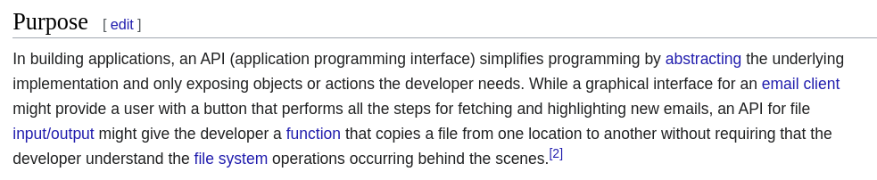
Dit wordt al duidelijker?!?
Doel#
[…] simplifies programming by abstracting the underlying implementation and only exposing objects or actions the developer needs.
Met het ontwerpen van eigen datatypen ontwerp je ook een API.
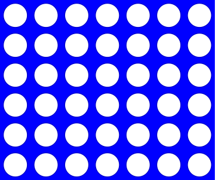
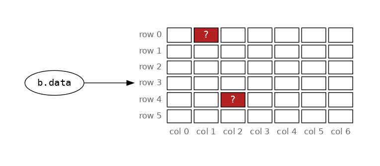
b.data[0][1] = "X"
b.data[4][2] = "O"
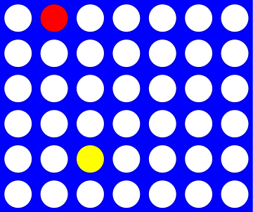
Board API#
b.add_move(1, "X")
b.add_move(2, "O")
[…] only exposing objects or actions the developer needs.
Unieke woorden tellen#
def get_text(filename):
"""Read from filename
"""
with open(filename) as f:
text = f.read()
return text
def vocab_count(text):
"""Count unique words in a text
Args:
text (str): The string to split and count
Returns:
dict: A dictionary with word counts
Example usage:
>>> text = "An example text to serve as an example"
>>> vocab_count(text)
{'An': 1, 'example': 2, 'text': 1, 'to': 1, 'serve': 1, 'as': 1, 'an': 1}
"""
LoW = text.split()
d = {}
for w in LoW:
if w not in d:
d[w] = 1
else:
d[w] += 1
return d
text = get_text("data/a.txt")
vocab_count(text)
{'Ik': 3,
'wil': 2,
'taarten': 2,
'en': 3,
'42': 2,
'spam.': 1,
'krijg': 1,
'toch': 1,
'spam': 1,
'voor': 1,
'de': 1,
'vakantie?': 1,
'taarten!': 1}
docstrings#
Niet alleen voor jezelf!
help(vocab_count)
Help on function vocab_count in module __main__:
vocab_count(text)
Count unique words in a text
Args:
text (str): The string to split and count
Returns:
dict: A dictionary with word counts
Example usage:
>>> text = "An example text to serve as an example"
>>> vocab_count(text)
{'An': 1, 'example': 2, 'text': 1, 'to': 1, 'serve': 1, 'as': 1, 'an': 1}
Batteries included#

Python bevat véél modules (batteries included) en veel voorkomende problemen zijn al voor jou opgelost, bijvoorbeeld voor het ophalen van data van het web, of specifieke types om data te representeren. Een voorbeeld van het laatste is de klasse Counter in de module collections.
Python API#
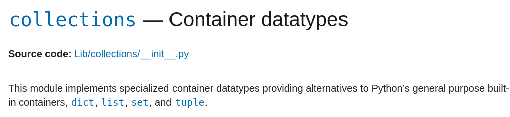
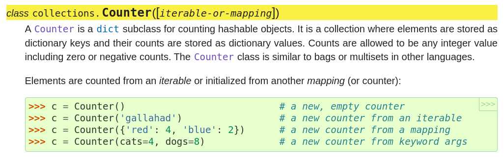
from collections import Counter
c = Counter(text)
c
Counter({' ': 19,
'a': 10,
't': 8,
'e': 8,
'n': 7,
'k': 5,
'r': 5,
'i': 4,
'I': 3,
'o': 3,
'w': 2,
'l': 2,
'4': 2,
'2': 2,
's': 2,
'p': 2,
'm': 2,
'v': 2,
'.': 1,
'j': 1,
'g': 1,
'c': 1,
'h': 1,
'd': 1,
'?': 1,
'!': 1})
c = Counter(text.split())
c
Counter({'Ik': 3,
'en': 3,
'wil': 2,
'taarten': 2,
'42': 2,
'spam.': 1,
'krijg': 1,
'toch': 1,
'spam': 1,
'voor': 1,
'de': 1,
'vakantie?': 1,
'taarten!': 1})
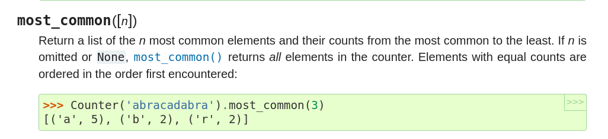
c.most_common(3)
[('Ik', 3), ('en', 3), ('wil', 2)]
Wat zijn de ronde haken (bijvoorbeel ('Ik', 3))? Tuples, en daar gaan we straks verder naar kijken!
Functies en parameters#
Functies accepteren parameters (inputs)
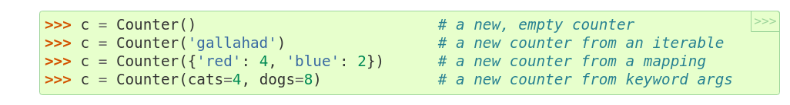
Het laatste voorbeeld (Counter(cats=4, dogs=8)) noemt deze vorm from keyword args. Deze vorm heb je niet eerder gezien!
Positionele parameters#
def f(x, y):
return 10 * x + y
x en y zijn positionele argumenten, de volgorde is van belang
f(4, 2)
42
Default en named parameters#
def f(x=3, y=17):
return 10 * x + y
Named parameters of ook wel keyword arguments genoemd. x en y hebben hier default (standaard) waarden (3 en 17). Omdat default waarden zijn gezet zijn parameters in de functie-aanroep niet nodig.
f()
47
Argumenten overschrijven de default argumenten.
f(3, 1)
31
In dit geval is het argument x gelijk aan 3, voor y zal de default waarde worden gebruikt.
f(3)
47
Omdat het named argumenten zijn kunnen ze ook expliciet met naam en waarde worden aangeroepen.
f(y=4, x=2)
24
Positionele én named parameters#
def f(x, y=17):
return 10 * x + y
f()
---------------------------------------------------------------------------
TypeError Traceback (most recent call last)
Cell In[19], line 1
----> 1 f()
TypeError: f() missing 1 required positional argument: 'x'
Python geeft hier aan dat een waarde voor het positionele argument ontbreekt. Waarden voor positionele argumenten zijn verplicht!
def f(x=3, y):
return 10 * x + y
File "/tmp/ipykernel_2323908/3271106230.py", line 1
def f(x=3, y):
^
SyntaxError: non-default argument follows default argument
Postionele argumenten moeten altijd als eerste worden opgegeven, gevolgd door eventuele named parameters.
Quiz#
Vraag 1#
def f(x=2, y=11):
return x + 3 * y
Wat is het resultaat van
f()f(3)f(3, 1)f(y=4, x=2)
Hint: 42 is niet één van de antwoorden!
Oplossing#
35
36
6
14
Vraag 2#
def f(x=2, y=11):
return x + 3 * y
voor welke waarden van
xenygeeft de functie'Lalalalala'terug?wat is het resultaat van
f((), (1, 0))?dit zijn tuples en werken net als lists!
wat is het resultaat van:
y = 60 x = -6 f(y=x, x=y)
Oplossing#
f("Lala", "la")(1, 0, 1, 0, 1, 0)42
Tuples#
Tuples lijken op lists
T = (42, 2)
T[0]
42
for x in T:
print(x)
42
2
Tuples zijn immutable#
In tegenstelling tot lists!
T[1] = 42
---------------------------------------------------------------------------
TypeError Traceback (most recent call last)
/tmp/ipykernel_2323908/2589284983.py in <module>
----> 1 T[1] = 42
TypeError: 'tuple' object does not support item assignment
Verrassingen#
width = 4
s = " "
for col in range(width):
s += str(col), " "
---------------------------------------------------------------------------
TypeError Traceback (most recent call last)
/tmp/ipykernel_2323908/4210715536.py in <module>
3
4 for col in range(width):
----> 5 s += str(col), " "
TypeError: can only concatenate str (not "tuple") to str
width = 4
s = " ",
for col in range(width):
s += str(col), " "
s
(' ', '0', ' ', '1', ' ', '2', ' ', '3', ' ')
(" ",) + (0, " ")
(' ', 0, ' ')
Verloren komma’s#
def mul(x, y):
return x * y,
assert mul(2, 2) == 4
---------------------------------------------------------------------------
AssertionError Traceback (most recent call last)
/tmp/ipykernel_2323908/4254919550.py in <module>
----> 1 assert mul(2, 2) == 4
AssertionError:
x = mul(2, 2)
type(x)
tuple
x
(4,)
Meerdere returnwaarden#
L = [25, 26, 21, 18, 15, 20, 25, 28, 34, 40, 35]
def f(L):
profit = L[1] - L[0]
buy_day = 0
sell_day = 1
for b in range(len(L)):
for s in range(b + 1, len(L)):
if L[s] - L[b] > profit:
profit = L[s] - L[b]
buy_day = b
sell_day = s
return buy_day, sell_day, profit
f(L)
(4, 9, 25)
Tuple unpacking, dit is handig!
buy_day, sell_day, profit = f(L)
En herinner je je f-strings nog?
print(f"buy on day {buy_day}, sell on day {sell_day} and your profit will be {profit}!")
buy on day 4, sell on day 9 and your profit will be 25!
VPython#
3D Programming for Ordinary Mortals
Gemaakt door en voor fysici voor het maken van 3D simulaties
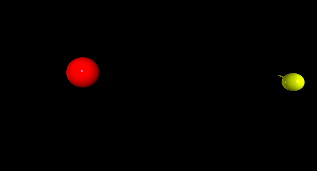
Functionaliteit#
Veel klassen, objecten en methoden zijn beschreven in de API documentatie
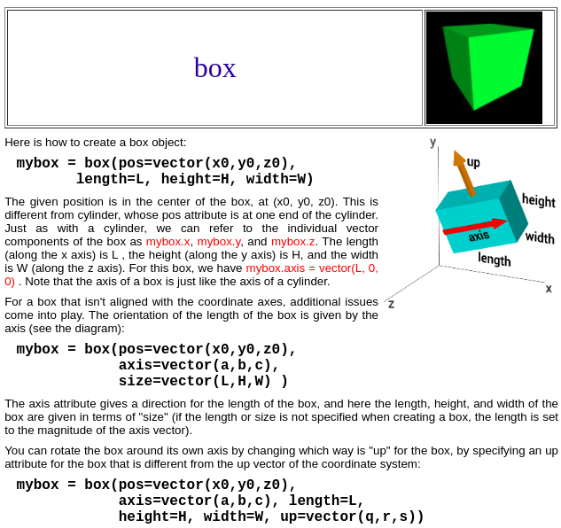
Parameters#
De API documentatie beschrijft het gebruik
mybox = box(
pos=vector(x0, y0, z0),
axis=vector(a, b, c),
length=L,
height=H,
width=W,
up=vector(q, r, s),
)
Een constructor (voor het type box), default argumenten en data!
Vectoren#
Lijken op tuples…
Snelheid
b.vel = vector(1, 0, 0)
De snelheid per dimensie (x, y en z assen)
Positie
b.pos = vector(0, 0, 0)
De positie per dimensie (x, y en z assen)
Operaties op vectoren#
Een volgende positie op basis van een snelheid
b.pos = b.pos + b.vel * 0.2
De waarde 0.2 zou hier een mate van verval kunnen zijn (bijvoorbeeld door wrijving, de snelheid neemt af!)
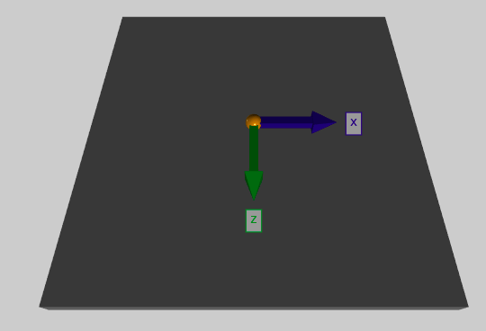
# if the ball ventures too far, restart with random velocity...
if mag(ball.pos - origin) > 10.0: # mag finds magnitude of a vector
ball.pos = vector(0, 0, 0) # reset the ball.pos (position)
ball.vel = 4.2 * vector.random() # set a random velocity
ball.vel.y = 0.0 # with no y component (no vertical)
print("velocity is now:", ball.vel)
Assen#
De dimensies x, y en z
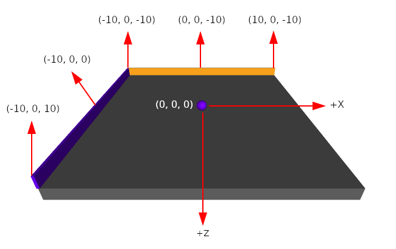
De vloer is het x bij z oppervlak, de y-richting is verticaal ten opzichte van de vloer (en blijft gelijk aan 0).
Actie en interactie#
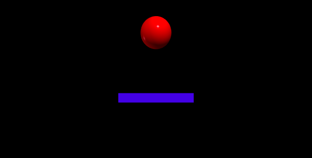
floor = box(length=4, width=4, height=0.5, color=vector(0, 0, 1))
ball = sphere(pos=vector(0, 4.2, 0), radius=1, color=vector(1, 0, 0))
ball.vel = vector(0, -1, 0) # this is the velocity
RATE = 30
dt = 1.0 / RATE
while True:
# Halts computations until 1.0/frequency seconds
# after the previous call to rate().
rate(RATE)
ball.pos = ball.pos + ball.vel * dt # what is this doing?
if ball.pos.y < ball.radius: # what is the if doing?
ball.vel.y *= -1.0
else: # what is the else doing?
ball.vel.y += -9.8 * dt
Verplaatsing, op basis van snelheid
ball.pos = ball.pos + ball.vel * dt
Botsing, draai de bewegingsrichting om
if ball.pos.y < ball.radius:
ball.vel.y *= -1.0
Zwaartekracht, vertraag of versnel afhankelijk van de bewegingsrichting
else:
ball.vel.y += -9.8 * dt
Zwaartekracht zorgt voor een versnelling of vetraging van een object met 9.81 meter per seconde, voor elke seconde (\(9.81 m / s^2\))
Zijwind#
Een toevalige (constante) zijwind …
else:
ball.vel.y += -9.8 * dt
ball.vel.x += 0.5 * dt
Objecten en klassen#
Welke klassen en objecten kan je aanwijzen?
floor = box(length=4, width=4, height=0.5, color=vector(0, 0, 1))
ball = sphere(pos=vector(0, 4.2, 0), radius=1, color=vector(1, 0, 0))
ball.vel = vector(0, -1, 0) # this is the velocity
RATE = 30
dt = 1.0 / RATE
while True:
# Halts computations until 1.0/frequency seconds after the previous call to rate().
rate(RATE)
ball.pos = ball.pos + ball.vel * dt # what is this doing?
if ball.pos.y < ball.radius: # what is the if doing?
ball.vel.y *= -1.0
else: # what is the else doing?
ball.vel.y += -9.8 * dt
Klassen
boxspherevector
Objecten
floorballball.velball.pos